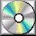

Sacred-texts home
Journal Articles: Islam
OCRT: Islam
Buy CD-ROM
Buy books about Islam

|
Islam
|
Qur'an
Hadith
Sufi Texts
Islamic History and Culture
Islamic Date
PLEASE READ THIS IMPORTANT NOTE
Qur'an
The Qur'an is the primary text of Islam, revealed to the Prophet Muhammed
beginning in the year 610 C.E.
It was canonicalized between 644 and 656.
The Qur'an is required reading for anyone who wants to understand Islam.
Qur'an means "The Recital" in Arabic; according to the story, the angel
Gabriel commanded Muhammed to "Recite!".

Hypertext Qur'an
This page links together all of the Qur'an versions at this site.
Unicode Qur'an
The Arabic text of the Qur'an presented using Unicode.
For more information on Unicode see this file.
Includes a parallel transliteration into the International Phonetic Alphabet (IPA).
The Holy Qur'an: Arabic Text, Pronunciation Guide, Yusuf Ali English Text
A merged version of the excellent Yusuf Ali English translation in parallel with Arabic.
Arabic script is presented using GIF image files.
The Qur’ân, Part I
tr. by E.H. Palmer [1880] (Sacred Books of the East, vol. 6)
This is a completely new etext of the first volume of the Palmer Quran traslation,
with full introduction and footnotes.
The Qur’ân, Part II
tr. by E.H. Palmer [1880] (Sacred Books of the East, vol. 9)
A completely new etext of the second volume of the Palmer Quran translation,
with full footnotes and the text of the index for Part I and Part II.
The Koran
translated by J.M. Rodwell [1876]
Another major Quran translation from the 19th century.
The Qur'an
by Mohammed Marmaduke Pickthall (1875-1936) [1930]
A modern and sympathetic English rendering of the Quran.
The Holy Quran
by Abdullah Yusuf Ali [1934]
One of the first modern English editions of the Quran, still in wide use today.
Hadith
The Hadith, second only to the Qur'an in importance and authority,
are collections of Islamic traditions and laws (Sunna).
This includes traditional sayings of Muhammed and later Islamic sages.
By the ninth century over 600,000 Hadith had been recorded;
these were later edited down to about 25,000.
A Manual of Hadith
Translated by Maulana Muhammad Ali [1944].
Hadith of Bukhari
An extensive collection of Hadith.
Sufism is a mystical Islamic belief system.
It is renowned for its contributions to world literature:
beautiful symbolic poetry and devotional story-telling,
much of which was translated in the 19th century by European scholars
and travellers.
The Rubayyat of Omar Khayyam
by Omar Khayyam, tr. by Edward Fitzgerald [1859]. 16,814 bytes
Oriental Mysticism
by E.H. Palmer [1867]
Decoding the cloaked Sufi narrative of the journey to God.
Selections from the Poetry of the Afghans
by H. G. Raverty [1867]
Anthology of later Sufi poets from Afghanistan, many translated directly from rare manuscripts.
The Kasîdah
of Hâjî Abdû El-Yezdî
by Sir Richard Burton [1880]
The Mesnevi (Book I) of Rumi,
with Acts of the Adepts by Eflaki
Translated by James W. Redhouse [1881]
One of the first extensive English translations of Rumi, with a collection of legendary tales of the Sufi masters.
Bird Parliament
by Farid ud-Din Attar,
Translated by Edward Fitzgerald [1889]
Also known as the 'Conference of the Birds,' this 12th century Sufi poem is a allegorical journey to the summit of enlightment.
Poems from the Divan of Hafiz
by Hafiz, tr. by Gertrude Lowthian Bell [1897].
The Masnavi of Rumi
Abridged and Translated by E.H. Whinfield [1898]
The primary 19th century translation of Rumi's masterwork.
The Gulistan of Sa'di
tr. by Edwin Arnold [1899]
333,563 bytes
Salaman and Absal
by Nur ad-Din Abd ar-Rahman Jami,
Translated by Edward Fitzgerald [1904]
A mystical Sufi allegory by the renowned Persian poet, Jami.
Sadi's Scroll of Wisdom
by Sadi, tr. by Arthur N. Wollaston, [1906]
A short collection of Sufi poems on moral themes by the renowned Persian poet.
The Alchemy of Happiness
by Al-Ghazzali, tr. by Claud Field [1909].
The Enclosed Garden of the Truth
(The Hadîqatu' l-Haqîqat of
Hakîm Abû' L-Majd Majdûd Sanâ'î)
tr. by J. Stephenson [1910]
A text by the Sufi poet and philosopher Sana'i.
The Bustan of Sadi
by Sadi, tr. by A. Hart Edwards [1911].
A Persian Sufi poet's legacy of wisdom.
The Tarjuman al-Ashwaq
by al-Arabi, tr. by Reynold A. Nicholson. [1911]
The Sufi quest for God, encoded in a cycle of amatory poetry.
The Diwan of Zeb-un-Nissa
by Zeb-un-Nissa, translated by Magan Lal and
Duncan Westbrook [1913]
Sufi poetry by an accomplished Mughal woman.
The Mystics of Islam
by Reynold A. Nicholson. [1914]. 267,991 bytes
A Sufi Message of Spritual Liberty
by Pir-o-Murshid Inayat Khan [1914]
Songs of Kabîr
tr. by Rabindranath Tagore, Introduction by Evelyn Underhill;
New York, The Macmillan Company; [1915]
The Secret Rose Garden
of Sa'd Ud Din Mahmud Shabistari,
Translated by Florence Lederer [1920]
Exquisite Sufi poetry.
The Secrets of the Self
by Muhammad Iqbal, tr. by Reynold A. Nicholson [1920]
A philosophical poem by the intellectual founder of the nation of Pakistan.
Studies in Islamic Mysticism
by Reynold Alleyne Nicholson, [1921].
The lives and writings of three early Sufi masters.
The Mishkât Al-Anwar
(The Niche for Lights) by Al-Ghazzali, translated by W.H.T. Gairdner [1924].
The Diwan of Abu'l-Ala
tr. by Henry Baerlein [1911]
A delighful selection of poems by a 10th century Syrian rationalist philosopher.
The Religion of the Koran
by Arthur N. Wollaston [1911]
A short introduction to Islam with topical quotes from the Qur'an.
Arabic Thought and Its Place in History
by De Lacy O'Leary [1922]
How Islamic philosophers preserved and built on ancient Hellenic ideas, and passed that legacy to the kindlers of the European Renaissance.
The Glory of the Shia World
by P. M. Sykes and Khan Bhadur Ahmad din Khan [1910]
Travel to one of the holiest Shiite shrines, Mashhad in Iran, in this rare 19th century literary collaboration between an Englishman and a Persian.
Arabian Poetry
by W. A. Clouston [1881]
Rare 19th century translations of Arabian poetry, mostly pre-Islamic or contemporary with Muhammed. Includes the Hanged Poems, and a synopsis of the Antar Saga.
The History of Philosophy in Islam
by T. J. De Boer [1903]
A short summary of the flowering of Islamic philosophy in the late middle ages.
Arabian Wisdom
by John Wortabet [1913]
Islamic wisdom literature from the Quran, Hadith and traditional proverbs.
The Maqámát of Badí‘ al-Zamán al-Hamadhání
translated by W.J. Prendergast [1915]
A masterpiece of medieval Islamic literature.
Islam
by John A. Williams [1962, not renewed]
An anthology of some key texts across the entire spectrum of Islamic tradition.
The Philosophy of Alfarabi
by Robert Hammond [1947]
Development of Muslim Theology, Jurisprudence and Constitutional Theory
by Duncan B. MacDonald [1903]
A survey of the history of Islamic thought, by a sympathetic Western scholar.
The Bible, The Koran, and the Talmud
or, Biblical Legends of the Mussulmans.
By Dr. G. Weil [1863]
The Hanged Poems
Translated by F.E. Johnson and Sheikh Faiz-ullah-bhai [1917]
Translations of the earliest (pre-Islamic) Arabic poetry known, poems originally displayed ("hanged") in the Kaaba, the holiest shrine of Mecca.
Folk-lore of the Holy Land
by J. E. Hanauer [1909]
Moslem, Christian and Jewish tales from old Palestine.
Christ In Islâm
by Rev. James Robson [1929].
The Gospel of Barnabas
trans. Lonsdale and Laura Ragg [1907].
Shiite Documents
Ismā‛īlī materials
IMPORTANT NOTE
It is our policy to preserve the original text and titles
of books transcribed for this site.
This has some theological implications in this section.
Some Muslims do not believe that any text other than the actual Arabic
text of the Quran (even a transliteration or an Arabic text with vowels)
can strictly be called 'the Qur'an'.
This is because the Arabic text is considered canonical
and there can be no other versions of it.
The phrase 'the meaning of the Quran' is typically used to
describe texts which would otherwise be described as 'translations'.
Please be aware of this issue where this site presents or refers to
a 'translation,' 'translator' or 'transliteration' of the Quran.
In addition, many of these books were originally written by Europeans
during the 19th century and use the term 'Mohammedan'
to refer to Muslims (by analogy with 'Buddhist,' 'Christian' etc.)
Most Muslims deprecate this term today because the founder of Islam
is considered a human prophet, rather than an entity to be worshipped, as the
term could be taken to imply.
In the interest of archival accuracy this terminology has been
retained in the etexts; in text that we've written, we have attempted to
avoid it, except in quotations.
No disrespect to Islam or Muslims is intended thereby.